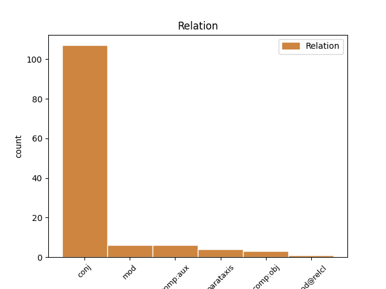
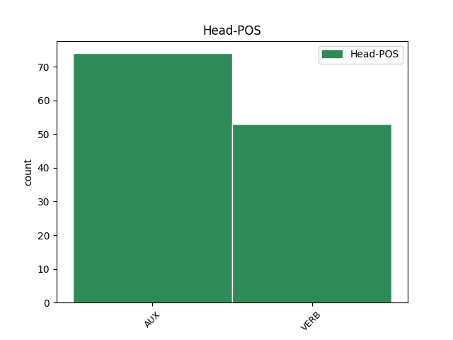
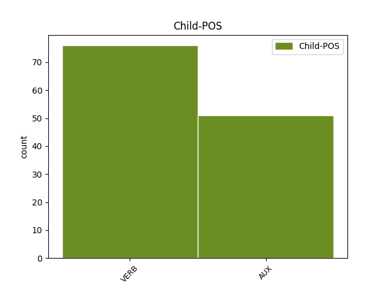

Distribution of features within this leaf



Agreement Rules sorted by frequency.
- When the dependent token is the conjunct(conj) of the head token, and the head token is VERB and the dependent token is VERB.
1 Les _ _ _ _ 0 _ _ _
2 dauphins _ _ _ _ 0 _ _ _
3 mangent manger VERB V Mood=Ind|Number=Plur|Person=3|Tense=Pres|VerbForm=Fin 0 _ _ _
4 les _ _ _ _ 0 _ _ _
5 poissons _ _ _ _ 0 _ _ _
6 qui _ _ _ _ 0 _ _ _
7 ont _ _ _ _ 0 _ _ _
8 absorbé _ _ _ _ 0 _ _ _
9 des _ _ _ _ 0 _ _ _
10 PCB _ _ _ _ 0 _ _ _
11 de _ _ _ _ 0 _ _ _
12 le _ _ _ _ 0 _ _ _
13 plancton _ _ _ _ 0 _ _ _
14 , _ _ _ _ 0 _ _ _
15 et _ _ _ _ 0 _ _ _
16 ces _ _ _ _ 0 _ _ _
17 PCB _ _ _ _ 0 _ _ _
18 , _ _ _ _ 0 _ _ _
19 étant _ _ _ _ 0 _ _ _
20 solubles _ _ _ _ 0 _ _ _
21 dans _ _ _ _ 0 _ _ _
22 la _ _ _ _ 0 _ _ _
23 graisse _ _ _ _ 0 _ _ _
24 , _ _ _ _ 0 _ _ _
25 s' _ _ _ _ 0 _ _ _
26 accumulent accumuler VERB V Mood=Ind|Number=Plur|Person=3|Tense=Pres|VerbForm=Fin 3 conj _ _
27 chez _ _ _ _ 0 _ _ _
28 les _ _ _ _ 0 _ _ _
29 dauphins _ _ _ _ 0 _ _ _
30 . _ _ _ _ 0 _ _ _
1 On _ _ _ _ 0 _ _ _
2 a avoir AUX VA Mood=Ind|Number=Sing|Person=3|Tense=Pres|VerbForm=Fin 0 _ _ _
3 rendu _ _ _ _ 0 _ _ _
4 les _ _ _ _ 0 _ _ _
5 gens _ _ _ _ 0 _ _ _
6 malheureux _ _ _ _ 0 _ _ _
7 , _ _ _ _ 0 _ _ _
8 et _ _ _ _ 0 _ _ _
9 on _ _ _ _ 0 _ _ _
10 leur _ _ _ _ 0 _ _ _
11 a avoir AUX VA Mood=Ind|Number=Sing|Person=3|Tense=Pres|VerbForm=Fin 2 conj _ _
12 donné _ _ _ _ 0 _ _ _
13 une _ _ _ _ 0 _ _ _
14 mauvaise _ _ _ _ 0 _ _ _
15 santé _ _ _ _ 0 _ _ _
16 . _ _ _ _ 0 _ _ _
1 Et _ _ _ _ 0 _ _ _
2 je _ _ _ _ 0 _ _ _
3 me _ _ _ _ 0 _ _ _
4 souviens _ _ _ _ 0 _ _ _
5 que _ _ _ _ 0 _ _ _
6 j' _ _ _ _ 0 _ _ _
7 étais être AUX VA Mood=Ind|Number=Sing|Person=1|Tense=Imp|VerbForm=Fin 0 _ _ _
8 assis _ _ _ _ 0 _ _ _
9 à _ _ _ _ 0 _ _ _
10 mon _ _ _ _ 0 _ _ _
11 bureau _ _ _ _ 0 _ _ _
12 et _ _ _ _ 0 _ _ _
13 je _ _ _ _ 0 _ _ _
14 pensais penser VERB V Mood=Ind|Number=Sing|Person=1|Tense=Imp|VerbForm=Fin 7 conj _ SpaceAfter=No
15 , _ _ _ _ 0 _ _ _
16 " _ _ _ _ 0 _ _ _
17 et _ _ _ _ 0 _ _ _
18 bien _ _ _ _ 0 _ _ _
19 , _ _ _ _ 0 _ _ _
20 je _ _ _ _ 0 _ _ _
21 le _ _ _ _ 0 _ _ _
22 sais _ _ _ _ 0 _ _ _
23 " _ _ _ _ 0 _ _ _
24 . _ _ _ _ 0 _ _ _
1 Ce _ _ _ _ 0 _ _ _
2 qui _ _ _ _ 0 _ _ _
3 arrivera _ _ _ _ 0 _ _ _
4 c' _ _ _ _ 0 _ _ _
5 est _ _ _ _ 0 _ _ _
6 que _ _ _ _ 0 _ _ _
7 les _ _ _ _ 0 _ _ _
8 chips _ _ _ _ 0 _ _ _
9 polystyrène _ _ _ _ 0 _ _ _
10 commenceront commencer VERB V Mood=Ind|Number=Plur|Person=3|Tense=Fut|VerbForm=Fin 0 _ _ _
11 à _ _ _ _ 0 _ _ _
12 voyager _ _ _ _ 0 _ _ _
13 dans _ _ _ _ 0 _ _ _
14 notre _ _ _ _ 0 _ _ _
15 société _ _ _ _ 0 _ _ _
16 ici _ _ _ _ 0 _ _ _
17 et _ _ _ _ 0 _ _ _
18 iront aller AUX VA Mood=Ind|Number=Plur|Person=3|Tense=Fut|VerbForm=Fin 10 conj _ _
19 s' _ _ _ _ 0 _ _ _
20 accumuler _ _ _ _ 0 _ _ _
21 chez _ _ _ _ 0 _ _ _
22 les _ _ _ _ 0 _ _ _
23 personnes _ _ _ _ 0 _ _ _
24 les _ _ _ _ 0 _ _ _
25 plus _ _ _ _ 0 _ _ _
26 ivres _ _ _ _ 0 _ _ _
27 et _ _ _ _ 0 _ _ _
28 radines _ _ _ _ 0 _ _ _
29 . _ _ _ _ 0 _ _ _
1 Rolf _ _ _ _ 0 _ _ _
2 Bolin _ _ _ _ 0 _ _ _
3 , _ _ _ _ 0 _ _ _
4 qui _ _ _ _ 0 _ _ _
5 était _ _ _ _ 0 _ _ _
6 professeur _ _ _ _ 0 _ _ _
7 à _ _ _ _ 0 _ _ _
8 la _ _ _ _ 0 _ _ _
9 station _ _ _ _ 0 _ _ _
10 marine _ _ _ _ 0 _ _ _
11 de _ _ _ _ 0 _ _ _
12 Hopkin _ _ _ _ 0 _ _ _
13 où _ _ _ _ 0 _ _ _
14 je _ _ _ _ 0 _ _ _
15 travaille _ _ _ _ 0 _ _ _
16 , _ _ _ _ 0 _ _ _
17 a avoir AUX VA Mood=Ind|Number=Sing|Person=3|Tense=Pres|VerbForm=Fin 0 _ _ _
18 écrit écrire VERB V Mood=Ind|Number=Sing|Person=3|Tense=Pres|VerbForm=Fin 17 comp:aux _ _
19 dans _ _ _ _ 0 _ _ _
20 les _ _ _ _ 0 _ _ _
21 années _ _ _ _ 0 _ _ _
22 40 _ _ _ _ 0 _ _ _
23 que _ _ _ _ 0 _ _ _
24 , _ _ _ _ 0 _ _ _
25 " _ _ _ _ 0 _ _ _
26 les _ _ _ _ 0 _ _ _
27 gaz _ _ _ _ 0 _ _ _
28 émanant _ _ _ _ 0 _ _ _
29 de _ _ _ _ 0 _ _ _
30 la _ _ _ _ 0 _ _ _
31 crasse _ _ _ _ 0 _ _ _
32 flottante _ _ _ _ 0 _ _ _
33 dans _ _ _ _ 0 _ _ _
34 les _ _ _ _ 0 _ _ _
35 anses _ _ _ _ 0 _ _ _
36 de _ _ _ _ 0 _ _ _
37 le _ _ _ _ 0 _ _ _
38 golfe _ _ _ _ 0 _ _ _
39 étaient _ _ _ _ 0 _ _ _
40 si _ _ _ _ 0 _ _ _
41 mauvais _ _ _ _ 0 _ _ _
42 qu' _ _ _ _ 0 _ _ _
43 ils _ _ _ _ 0 _ _ _
44 faisaient _ _ _ _ 0 _ _ _
45 même _ _ _ _ 0 _ _ _
46 noircir _ _ _ _ 0 _ _ _
47 les _ _ _ _ 0 _ _ _
48 peintures _ _ _ _ 0 _ _ _
49 à _ _ _ _ 0 _ _ _
50 le _ _ _ _ 0 _ _ _
51 plomb _ _ _ _ 0 _ _ _
52 " _ _ _ _ 0 _ _ _
53 . _ _ _ _ 0 _ _ _
1 Pour _ _ _ _ 0 _ _ _
2 conclure _ _ _ _ 0 _ _ _
3 , _ _ _ _ 0 _ _ _
4 l' _ _ _ _ 0 _ _ _
5 amendement _ _ _ _ 0 _ _ _
6 proposé _ _ _ _ 0 _ _ _
7 par _ _ _ _ 0 _ _ _
8 le _ _ _ _ 0 _ _ _
9 rapporteur _ _ _ _ 0 _ _ _
10 est être AUX V Mood=Ind|Number=Sing|Person=3|Tense=Pres|VerbForm=Fin 0 _ _ _
11 on _ _ _ _ 0 _ _ _
12 ne _ _ _ _ 0 _ _ _
13 peut pouvoir VERB V Mood=Ind|Number=Sing|Person=3|Tense=Pres|VerbForm=Fin 10 mod _ _
14 plus _ _ _ _ 0 _ _ _
15 logique _ _ _ _ 0 _ _ _
16 et _ _ _ _ 0 _ _ _
17 je _ _ _ _ 0 _ _ _
18 le _ _ _ _ 0 _ _ _
19 soutiens _ _ _ _ 0 _ _ _
20 avec _ _ _ _ 0 _ _ _
21 joie _ _ _ _ 0 _ _ _
22 . _ _ _ _ 0 _ _ _
1 Elle _ _ _ _ 0 _ _ _
2 sera être AUX VA Mood=Ind|Number=Sing|Person=3|Tense=Fut|VerbForm=Fin 0 _ _ _
3 , _ _ _ _ 0 _ _ _
4 je _ _ _ _ 0 _ _ _
5 l' _ _ _ _ 0 _ _ _
6 espère espérer VERB V Mood=Ind|Number=Sing|Person=3|Tense=Pres|VerbForm=Fin 2 parataxis _ SpaceAfter=No
7 , _ _ _ _ 0 _ _ _
8 examinée _ _ _ _ 0 _ _ _
9 dans _ _ _ _ 0 _ _ _
10 un _ _ _ _ 0 _ _ _
11 esprit _ _ _ _ 0 _ _ _
12 positif _ _ _ _ 0 _ _ _
13 . _ _ _ _ 0 _ _ _
1 d' _ _ _ _ 0 _ _ _
2 aucuns _ _ _ _ 0 _ _ _
3 l' _ _ _ _ 0 _ _ _
4 ont avoir AUX VA Mood=Ind|Number=Plur|Person=3|Tense=Pres|VerbForm=Fin 0 _ _ _
5 dit _ _ _ _ 0 _ _ _
6 , _ _ _ _ 0 _ _ _
7 la _ _ _ _ 0 _ _ _
8 situation _ _ _ _ 0 _ _ _
9 en _ _ _ _ 0 _ _ _
10 Indonésie _ _ _ _ 0 _ _ _
11 est être AUX V Mood=Ind|Number=Sing|Person=3|Tense=Pres|VerbForm=Fin 4 parataxis _ _
12 extrêmement _ _ _ _ 0 _ _ _
13 explosive _ _ _ _ 0 _ _ _
14 . _ _ _ _ 0 _ _ _
1 Cet _ _ _ _ 0 _ _ _
2 engagement _ _ _ _ 0 _ _ _
3 est _ _ _ _ 0 _ _ _
4 important _ _ _ _ 0 _ _ _
5 dans _ _ _ _ 0 _ _ _
6 la _ _ _ _ 0 _ _ _
7 mesure _ _ _ _ 0 _ _ _
8 où _ _ _ _ 0 _ _ _
9 la _ _ _ _ 0 _ _ _
10 commission _ _ _ _ 0 _ _ _
11 est _ _ _ _ 0 _ _ _
12 un _ _ _ _ 0 _ _ _
13 organisme _ _ _ _ 0 _ _ _
14 qui _ _ _ _ 0 _ _ _
15 détient _ _ _ _ 0 _ _ _
16 , _ _ _ _ 0 _ _ _
17 conformément _ _ _ _ 0 _ _ _
18 à _ _ _ _ 0 _ _ _
19 les _ _ _ _ 0 _ _ _
20 traités _ _ _ _ 0 _ _ _
21 , _ _ _ _ 0 _ _ _
22 le _ _ _ _ 0 _ _ _
23 monopole _ _ _ _ 0 _ _ _
24 de _ _ _ _ 0 _ _ _
25 l' _ _ _ _ 0 _ _ _
26 initiative _ _ _ _ 0 _ _ _
27 et _ _ _ _ 0 _ _ _
28 qui _ _ _ _ 0 _ _ _
29 , _ _ _ _ 0 _ _ _
30 par _ _ _ _ 0 _ _ _
31 conséquent _ _ _ _ 0 _ _ _
32 , _ _ _ _ 0 _ _ _
33 décide décider VERB V Mood=Ind|Number=Sing|Person=3|Tense=Pres|VerbForm=Fin 0 _ _ _
34 pour _ _ _ _ 0 _ _ _
35 l' _ _ _ _ 0 _ _ _
36 essentiel _ _ _ _ 0 _ _ _
37 quelle _ _ _ _ 0 _ _ _
38 sera être AUX V Mood=Ind|Number=Sing|Person=3|Tense=Fut|VerbForm=Fin 33 comp:obj _ _
39 l' _ _ _ _ 0 _ _ _
40 activité _ _ _ _ 0 _ _ _
41 politique _ _ _ _ 0 _ _ _
42 et _ _ _ _ 0 _ _ _
43 législative _ _ _ _ 0 _ _ _
44 de _ _ _ _ 0 _ _ _
45 ce _ _ _ _ 0 _ _ _
46 parlement _ _ _ _ 0 _ _ _
47 à _ _ _ _ 0 _ _ _
48 le _ _ _ _ 0 _ _ _
49 cours _ _ _ _ 0 _ _ _
50 de _ _ _ _ 0 _ _ _
51 les _ _ _ _ 0 _ _ _
52 cinq _ _ _ _ 0 _ _ _
53 prochaines _ _ _ _ 0 _ _ _
54 années _ _ _ _ 0 _ _ _
55 . _ _ _ _ 0 _ _ _
1 Nous _ _ _ _ 0 _ _ _
2 espérons _ _ _ _ 0 _ _ _
3 qu' _ _ _ _ 0 _ _ _
4 elle _ _ _ _ 0 _ _ _
5 garantira garantir VERB V Mood=Ind|Number=Sing|Person=3|Tense=Fut|VerbForm=Fin 0 _ _ _
6 , _ _ _ _ 0 _ _ _
7 en _ _ _ _ 0 _ _ _
8 allant _ _ _ _ 0 _ _ _
9 à _ _ _ _ 0 _ _ _
10 l' _ _ _ _ 0 _ _ _
11 encontre _ _ _ _ 0 _ _ _
12 de _ _ _ _ 0 _ _ _
13 le _ _ _ _ 0 _ _ _
14 gouvernement _ _ _ _ 0 _ _ _
15 britannique _ _ _ _ 0 _ _ _
16 , _ _ _ _ 0 _ _ _
17 la _ _ _ _ 0 _ _ _
18 participation _ _ _ _ 0 _ _ _
19 de _ _ _ _ 0 _ _ _
20 le _ _ _ _ 0 _ _ _
21 secteur _ _ _ _ 0 _ _ _
22 privé _ _ _ _ 0 _ _ _
23 à _ _ _ _ 0 _ _ _
24 la _ _ _ _ 0 _ _ _
25 phase _ _ _ _ 0 _ _ _
26 de _ _ _ _ 0 _ _ _
27 planification _ _ _ _ 0 _ _ _
28 , _ _ _ _ 0 _ _ _
29 tant _ _ _ _ 0 _ _ _
30 il _ _ _ _ 0 _ _ _
31 est être AUX V Mood=Ind|Number=Sing|Person=3|Tense=Pres|VerbForm=Fin 5 mod _ _
32 sûr _ _ _ _ 0 _ _ _
33 que _ _ _ _ 0 _ _ _
34 celui-ci _ _ _ _ 0 _ _ _
35 doit _ _ _ _ 0 _ _ _
36 fournir _ _ _ _ 0 _ _ _
37 le _ _ _ _ 0 _ _ _
38 principal _ _ _ _ 0 _ _ _
39 élan _ _ _ _ 0 _ _ _
40 à _ _ _ _ 0 _ _ _
41 les _ _ _ _ 0 _ _ _
42 dépenses _ _ _ _ 0 _ _ _
43 de _ _ _ _ 0 _ _ _
44 les _ _ _ _ 0 _ _ _
45 fonds _ _ _ _ 0 _ _ _
46 structurels _ _ _ _ 0 _ _ _
47 . _ _ _ _ 0 _ _ _
1 De _ _ _ _ 0 _ _ _
2 cette _ _ _ _ 0 _ _ _
3 façon _ _ _ _ 0 _ _ _
4 , _ _ _ _ 0 _ _ _
5 chacun _ _ _ _ 0 _ _ _
6 sur _ _ _ _ 0 _ _ _
7 Facebook _ _ _ _ 0 _ _ _
8 sait savoir VERB V Mood=Ind|Number=Sing|Person=3|Tense=Pres|VerbForm=Fin 0 _ _ _
9 avec _ _ _ _ 0 _ _ _
10 qui _ _ _ _ 0 _ _ _
11 il _ _ _ _ 0 _ _ _
12 communique communiquer VERB V Mood=Ind|Number=Sing|Person=3|Tense=Pres|VerbForm=Fin 8 comp:obj _ SpaceAfter=No
13 . _ _ _ _ 0 _ _ _
1 - _ _ _ _ 0 _ _ _
2 en _ _ _ _ 0 _ _ _
3 ce _ _ _ _ 0 _ _ _
4 qui _ _ _ _ 0 _ _ _
5 concerne _ _ _ _ 0 _ _ _
6 l' _ _ _ _ 0 _ _ _
7 effet _ _ _ _ 0 _ _ _
8 de _ _ _ _ 0 _ _ _
9 le _ _ _ _ 0 _ _ _
10 programme _ _ _ _ 0 _ _ _
11 relatif _ _ _ _ 0 _ _ _
12 à _ _ _ _ 0 _ _ _
13 la _ _ _ _ 0 _ _ _
14 convergence _ _ _ _ 0 _ _ _
15 de _ _ _ _ 0 _ _ _
16 l' _ _ _ _ 0 _ _ _
17 action _ _ _ _ 0 _ _ _
18 de _ _ _ _ 0 _ _ _
19 formation _ _ _ _ 0 _ _ _
20 de _ _ _ _ 0 _ _ _
21 les _ _ _ _ 0 _ _ _
22 formateurs _ _ _ _ 0 _ _ _
23 à _ _ _ _ 0 _ _ _
24 un _ _ _ _ 0 _ _ _
25 niveau _ _ _ _ 0 _ _ _
26 élevé _ _ _ _ 0 _ _ _
27 , _ _ _ _ 0 _ _ _
28 il _ _ _ _ 0 _ _ _
29 n' _ _ _ _ 0 _ _ _
30 a avoir AUX VA Mood=Ind|Number=Sing|Person=3|Tense=Pres|VerbForm=Fin 0 _ _ _
31 pas _ _ _ _ 0 _ _ _
32 été _ _ _ _ 0 _ _ _
33 possible _ _ _ _ 0 _ _ _
34 de _ _ _ _ 0 _ _ _
35 réaliser _ _ _ _ 0 _ _ _
36 une _ _ _ _ 0 _ _ _
37 évaluation _ _ _ _ 0 _ _ _
38 car _ _ _ _ 0 _ _ _
39 les _ _ _ _ 0 _ _ _
40 informations _ _ _ _ 0 _ _ _
41 n' _ _ _ _ 0 _ _ _
42 étaient être AUX V Mood=Ind|Number=Plur|Person=3|Tense=Pres|VerbForm=Fin 30 mod _ _
43 pas _ _ _ _ 0 _ _ _
44 suffisantes _ _ _ _ 0 _ _ _
45 concernant _ _ _ _ 0 _ _ _
46 le _ _ _ _ 0 _ _ _
47 lien _ _ _ _ 0 _ _ _
48 entre _ _ _ _ 0 _ _ _
49 les _ _ _ _ 0 _ _ _
50 stratégies _ _ _ _ 0 _ _ _
51 nationales _ _ _ _ 0 _ _ _
52 et _ _ _ _ 0 _ _ _
53 les _ _ _ _ 0 _ _ _
54 activités _ _ _ _ 0 _ _ _
55 prévues _ _ _ _ 0 _ _ _
56 dans _ _ _ _ 0 _ _ _
57 le _ _ _ _ 0 _ _ _
58 cadre _ _ _ _ 0 _ _ _
59 de _ _ _ _ 0 _ _ _
60 Pericles _ _ _ _ 0 _ _ _
61 ; _ _ _ _ 0 _ _ _
1 On _ _ _ _ 0 _ _ _
2 connaît connaître VERB V Mood=Ind|Number=Sing|Person=3|Tense=Pres|VerbForm=Fin 0 _ _ _
3 ça _ _ _ _ 0 _ _ _
4 , _ _ _ _ 0 _ _ _
5 n' _ _ _ _ 0 _ _ _
6 est être VERB V Mood=Ind|Number=Sing|Person=3|Tense=Pres|VerbForm=Fin 2 mod _ SpaceAfter=No
7 -ce _ _ _ _ 0 _ _ _
8 pas _ _ _ _ 0 _ _ _
9 ? _ _ _ _ 0 _ _ _
1 Et _ _ _ _ 0 _ _ _
2 je _ _ _ _ 0 _ _ _
3 me _ _ _ _ 0 _ _ _
4 souviens _ _ _ _ 0 _ _ _
5 que _ _ _ _ 0 _ _ _
6 j' _ _ _ _ 0 _ _ _
7 étais _ _ _ _ 0 _ _ _
8 assis _ _ _ _ 0 _ _ _
9 à _ _ _ _ 0 _ _ _
10 mon _ _ _ _ 0 _ _ _
11 bureau _ _ _ _ 0 _ _ _
12 et _ _ _ _ 0 _ _ _
13 je _ _ _ _ 0 _ _ _
14 pensais penser VERB V Mood=Ind|Number=Sing|Person=1|Tense=Imp|VerbForm=Fin 0 _ _ _
15 , _ _ _ _ 0 _ _ _
16 " _ _ _ _ 0 _ _ _
17 et _ _ _ _ 0 _ _ _
18 bien _ _ _ _ 0 _ _ _
19 , _ _ _ _ 0 _ _ _
20 je _ _ _ _ 0 _ _ _
21 le _ _ _ _ 0 _ _ _
22 sais savoir VERB V Mood=Ind|Number=Sing|Person=1|VerbForm=Fin 14 parataxis _ SpaceAfter=No
23 " _ _ _ _ 0 _ _ _
24 . _ _ _ _ 0 _ _ _
Disagree Examples:
1 L' _ _ _ _ 0 _ _ _
2 exercice _ _ _ _ 0 _ _ _
3 de _ _ _ _ 0 _ _ _
4 tous _ _ _ _ 0 _ _ _
5 les _ _ _ _ 0 _ _ _
6 droits _ _ _ _ 0 _ _ _
7 qui _ _ _ _ 0 _ _ _
8 ne _ _ _ _ 0 _ _ _
9 sont être AUX VA Mood=Ind|Number=Plur|Person=3|Tense=Pres|VerbForm=Fin 0 _ _ _
10 pas _ _ _ _ 0 _ _ _
11 expressément _ _ _ _ 0 _ _ _
12 autorisés _ _ _ _ 0 _ _ _
13 par _ _ _ _ 0 _ _ _
14 l' _ _ _ _ 0 _ _ _
15 offrant _ _ _ _ 0 _ _ _
16 ou _ _ _ _ 0 _ _ _
17 dont _ _ _ _ 0 _ _ _
18 il _ _ _ _ 0 _ _ _
19 n' _ _ _ _ 0 _ _ _
20 aurait avoir VERB V Mood=Cnd|Number=Sing|Person=3|Tense=Pres|VerbForm=Fin 9 conj _ _
21 pas _ _ _ _ 0 _ _ _
22 la _ _ _ _ 0 _ _ _
23 gestion _ _ _ _ 0 _ _ _
24 demeure _ _ _ _ 0 _ _ _
25 réservé _ _ _ _ 0 _ _ _
26 , _ _ _ _ 0 _ _ _
27 notamment _ _ _ _ 0 _ _ _
28 les _ _ _ _ 0 _ _ _
29 mécanismes _ _ _ _ 0 _ _ _
30 de _ _ _ _ 0 _ _ _
31 gestion _ _ _ _ 0 _ _ _
32 collective _ _ _ _ 0 _ _ _
33 obligatoire _ _ _ _ 0 _ _ _
34 applicables _ _ _ _ 0 _ _ _
35 décrits _ _ _ _ 0 _ _ _
36 à _ _ _ _ 0 _ _ _
37 l' _ _ _ _ 0 _ _ _
38 article _ _ _ _ 0 _ _ _
39 4d _ _ _ _ 0 _ _ _
40 . _ _ _ _ 0 _ _ _
1 Les _ _ _ _ 0 _ _ _
2 mentions _ _ _ _ 0 _ _ _
3 ci-dessus _ _ _ _ 0 _ _ _
4 s' _ _ _ _ 0 _ _ _
5 appliquent appliquer VERB V Mood=Ind|Number=Plur|Person=3|Tense=Pres|VerbForm=Fin 0 _ _ _
6 à _ _ _ _ 0 _ _ _
7 l' _ _ _ _ 0 _ _ _
8 oeuvre _ _ _ _ 0 _ _ _
9 telle _ _ _ _ 0 _ _ _
10 qu' _ _ _ _ 0 _ _ _
11 incorporée _ _ _ _ 0 _ _ _
12 dans _ _ _ _ 0 _ _ _
13 une _ _ _ _ 0 _ _ _
14 oeuvre _ _ _ _ 0 _ _ _
15 dite _ _ _ _ 0 _ _ _
16 collective _ _ _ _ 0 _ _ _
17 , _ _ _ _ 0 _ _ _
18 mais _ _ _ _ 0 _ _ _
19 , _ _ _ _ 0 _ _ _
20 en _ _ _ _ 0 _ _ _
21 dehors _ _ _ _ 0 _ _ _
22 de _ _ _ _ 0 _ _ _
23 l' _ _ _ _ 0 _ _ _
24 oeuvre _ _ _ _ 0 _ _ _
25 en _ _ _ _ 0 _ _ _
26 elle-même _ _ _ _ 0 _ _ _
27 , _ _ _ _ 0 _ _ _
28 ne _ _ _ _ 0 _ _ _
29 soumettent soumettre VERB V Mood=Sub|Number=Plur|Person=3|Tense=Pres|VerbForm=Fin 5 conj _ _
30 pas _ _ _ _ 0 _ _ _
31 l' _ _ _ _ 0 _ _ _
32 oeuvre _ _ _ _ 0 _ _ _
33 dite _ _ _ _ 0 _ _ _
34 collective _ _ _ _ 0 _ _ _
35 , _ _ _ _ 0 _ _ _
36 à _ _ _ _ 0 _ _ _
37 les _ _ _ _ 0 _ _ _
38 termes _ _ _ _ 0 _ _ _
39 de _ _ _ _ 0 _ _ _
40 le _ _ _ _ 0 _ _ _
41 présent _ _ _ _ 0 _ _ _
42 contrat _ _ _ _ 0 _ _ _
43 . _ _ _ _ 0 _ _ _
1 À _ _ _ _ 0 _ _ _
2 mon _ _ _ _ 0 _ _ _
3 sens _ _ _ _ 0 _ _ _
4 , _ _ _ _ 0 _ _ _
5 le _ _ _ _ 0 _ _ _
6 principe _ _ _ _ 0 _ _ _
7 de _ _ _ _ 0 _ _ _
8 stabilité _ _ _ _ 0 _ _ _
9 relative _ _ _ _ 0 _ _ _
10 est être AUX V Mood=Ind|Number=Sing|Person=3|Tense=Pres|VerbForm=Fin 0 _ _ _
11 un _ _ _ _ 0 _ _ _
12 principe _ _ _ _ 0 _ _ _
13 juridique _ _ _ _ 0 _ _ _
14 fondamental _ _ _ _ 0 _ _ _
15 de _ _ _ _ 0 _ _ _
16 la _ _ _ _ 0 _ _ _
17 politique _ _ _ _ 0 _ _ _
18 commune _ _ _ _ 0 _ _ _
19 de _ _ _ _ 0 _ _ _
20 la _ _ _ _ 0 _ _ _
21 pêche _ _ _ _ 0 _ _ _
22 et _ _ _ _ 0 _ _ _
23 toute _ _ _ _ 0 _ _ _
24 proposition _ _ _ _ 0 _ _ _
25 le _ _ _ _ 0 _ _ _
26 bouleversant _ _ _ _ 0 _ _ _
27 serait être AUX V Mood=Cnd|Number=Sing|Person=3|Tense=Pres|VerbForm=Fin 10 conj _ _
28 juridiquement _ _ _ _ 0 _ _ _
29 irrecevable _ _ _ _ 0 _ _ _
30 . _ _ _ _ 0 _ _ _
1 Madame _ _ _ _ 0 _ _ _
2 la _ _ _ _ 0 _ _ _
3 présidente _ _ _ _ 0 _ _ _
4 , _ _ _ _ 0 _ _ _
5 je _ _ _ _ 0 _ _ _
6 voudrais vouloir AUX VM Mood=Cnd|Number=Sing|Person=1|Tense=Pres|VerbForm=Fin 0 _ _ _
7 tout _ _ _ _ 0 _ _ _
8 d' _ _ _ _ 0 _ _ _
9 abord _ _ _ _ 0 _ _ _
10 vous _ _ _ _ 0 _ _ _
11 féliciter _ _ _ _ 0 _ _ _
12 pour _ _ _ _ 0 _ _ _
13 avoir _ _ _ _ 0 _ _ _
14 tenu _ _ _ _ 0 _ _ _
15 parole _ _ _ _ 0 _ _ _
16 car _ _ _ _ 0 _ _ _
17 en _ _ _ _ 0 _ _ _
18 effet _ _ _ _ 0 _ _ _
19 , _ _ _ _ 0 _ _ _
20 en _ _ _ _ 0 _ _ _
21 cette _ _ _ _ 0 _ _ _
22 première _ _ _ _ 0 _ _ _
23 période _ _ _ _ 0 _ _ _
24 de _ _ _ _ 0 _ _ _
25 session _ _ _ _ 0 _ _ _
26 , _ _ _ _ 0 _ _ _
27 en _ _ _ _ 0 _ _ _
28 cette _ _ _ _ 0 _ _ _
29 nouvelle _ _ _ _ 0 _ _ _
30 année _ _ _ _ 0 _ _ _
31 , _ _ _ _ 0 _ _ _
32 le _ _ _ _ 0 _ _ _
33 nombre _ _ _ _ 0 _ _ _
34 de _ _ _ _ 0 _ _ _
35 chaînes _ _ _ _ 0 _ _ _
36 de _ _ _ _ 0 _ _ _
37 télévision _ _ _ _ 0 _ _ _
38 a avoir AUX VA Mood=Ind|Number=Sing|Person=3|Tense=Pres|VerbForm=Fin 6 conj _ _
39 réellement _ _ _ _ 0 _ _ _
40 été _ _ _ _ 0 _ _ _
41 augmenté _ _ _ _ 0 _ _ _
42 de _ _ _ _ 0 _ _ _
43 manière _ _ _ _ 0 _ _ _
44 significative _ _ _ _ 0 _ _ _
45 dans _ _ _ _ 0 _ _ _
46 nos _ _ _ _ 0 _ _ _
47 locaux _ _ _ _ 0 _ _ _
48 . _ _ _ _ 0 _ _ _
1 Les _ _ _ _ 0 _ _ _
2 services _ _ _ _ 0 _ _ _
3 compétents _ _ _ _ 0 _ _ _
4 ne _ _ _ _ 0 _ _ _
5 les _ _ _ _ 0 _ _ _
6 ont avoir AUX VA Mood=Ind|Number=Plur|Person=3|Tense=Pres|VerbForm=Fin 0 _ _ _
7 pas _ _ _ _ 0 _ _ _
8 inclues inclure VERB V Mood=Sub|Number=Sing|Person=2|Tense=Pres|VerbForm=Fin 6 comp:aux _ _
9 à _ _ _ _ 0 _ _ _
10 l' _ _ _ _ 0 _ _ _
11 ordre _ _ _ _ 0 _ _ _
12 de _ _ _ _ 0 _ _ _
13 le _ _ _ _ 0 _ _ _
14 jour _ _ _ _ 0 _ _ _
15 , _ _ _ _ 0 _ _ _
16 avançant _ _ _ _ 0 _ _ _
17 que _ _ _ _ 0 _ _ _
18 des _ _ _ _ 0 _ _ _
19 réponses _ _ _ _ 0 _ _ _
20 avaient _ _ _ _ 0 _ _ _
21 déjà _ _ _ _ 0 _ _ _
22 été _ _ _ _ 0 _ _ _
23 apportées _ _ _ _ 0 _ _ _
24 lors _ _ _ _ 0 _ _ _
25 d' _ _ _ _ 0 _ _ _
26 une _ _ _ _ 0 _ _ _
27 précédente _ _ _ _ 0 _ _ _
28 session _ _ _ _ 0 _ _ _
29 . _ _ _ _ 0 _ _ _